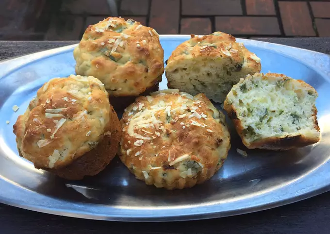

- Ingredientes:
- 20 raciones
- 3 huevos
- 250 grs harina
- 1 cda polvo de hornear
- C/n leche
- 3 cebollas de verdeo
- 100 grs queso rallado
- C/n condimentos varios (sal, pimienta)
- En un bowl, batir los huevos. Añadir los condimentos (sal, pimienta) y batir todo.
- Agregar la harina, el polvo de hornear y mezclar hasta que se haga una pasta medio densa. Luego agregar de a poco la leche hasta que se forme una masa bastante pegajosa.
- Agregar la cebollita de verdeo picada en trocitos (toda, el tallo también! no se desperdicia nada) y el queso. Mezclar con una cuchara hasta que quede todo bien integrado.
- Aceitar los moldes de muffins o tarteletas (si no tienen los pueden hacer como buñuelitos) y colocar la mitad de la preparación en cada uno. Le pueden tirar más queso por encima para que gratine.
- Mandar al horno a una potencia de 180 grados durante 25 minutos aprox.